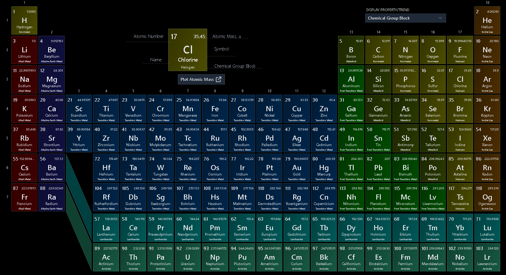

https://pubchem.ncbi.nlm.nih.gov/periodic-table/

Footnotes
-
Columns refer to group whilst row to the period. ↩
-
Data for each element was collected form GoodmanSciences (Gist). ↩
-
Further information may be checked from one of the following links: Wikipedia, IUPAC, PubChem & American Chemical Society. ↩